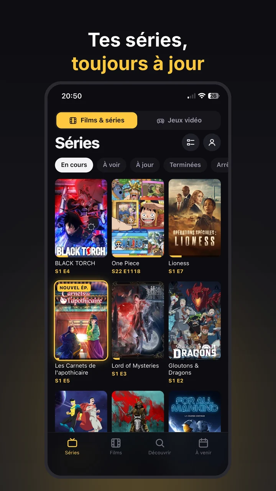
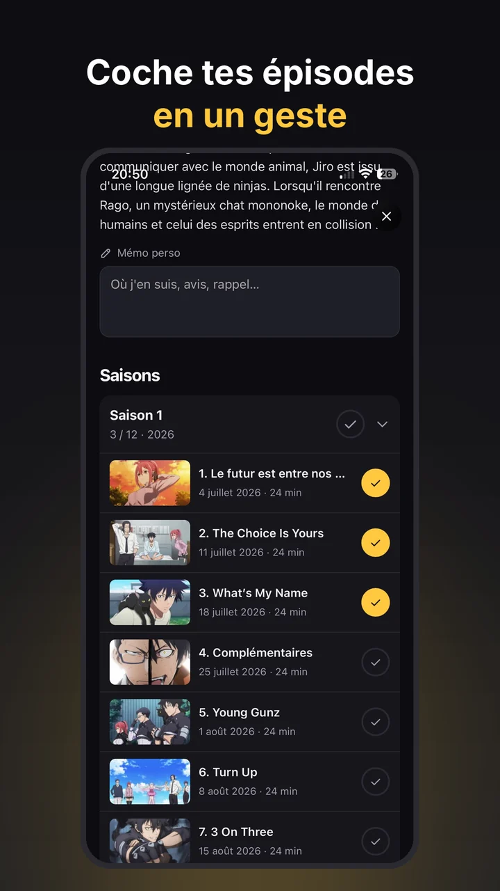
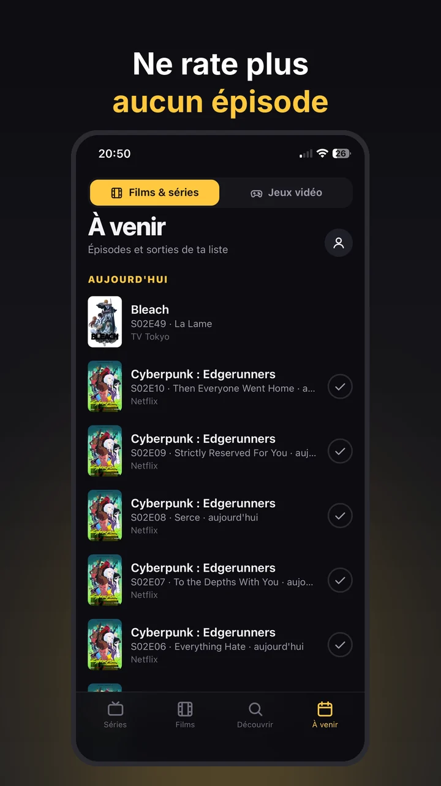
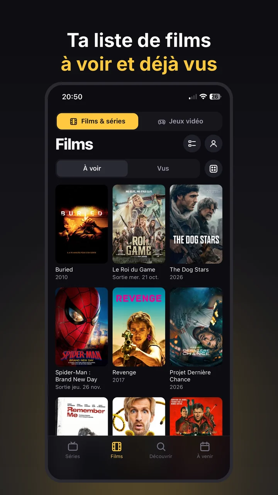
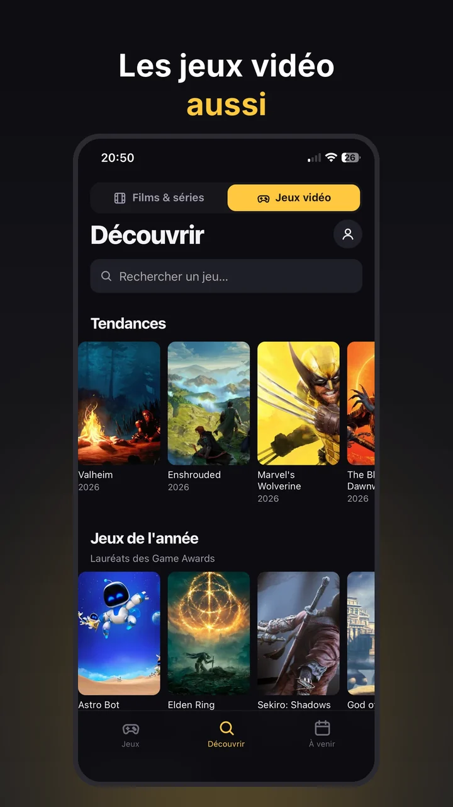

Playwatch importe ton export TV Time : séries suivies, épisodes vus et films réapparaissent en quelques minutes. Tu retrouves ta liste « À voir », les prochains épisodes et une notification à chaque nouvelle sortie.
Gratuit, sans publicité, données hébergées en Europe.


Tu as demandé ton export de données à TV Time avant la fermeture (le fichier .zip reçu par e-mail) ? Playwatch le lit directement.
L'import fait partie de Playwatch Premium (1,99 € une seule fois). Playwatch lit aussi les exports Binge Boxd.
Et quelques bonus que tu n'avais pas.



Pas d'abonnement, pas de publicité.
Sans l'export, tes données TV Time ne sont plus accessibles. Dans Playwatch, ajoute tes séries puis utilise « Vu jusqu'ici » sur le dernier épisode que tu as vu : tous les épisodes précédents sont cochés d'un coup.
Le fichier .zip complet, tel que TV Time l'a envoyé, ou les fichiers .csv qu'il contient. Playwatch reconnaît les différentes versions de l'export.
Oui : le suivi des séries, des films et des jeux est gratuit et sans publicité. Premium coûte 1,99 € une seule fois, sans abonnement, et ajoute l'import d'historique, les notifications, les statistiques avancées, le calendrier abonnable et les thèmes.
Dans l'Union européenne (Google Firebase, région Paris). Pas de publicité, pas de mesure d'audience, aucune revente. Tu peux exporter tes données ou supprimer ton compte à tout moment. Politique de confidentialité.
Importe ton historique TV Time et ne rate plus aucun épisode.